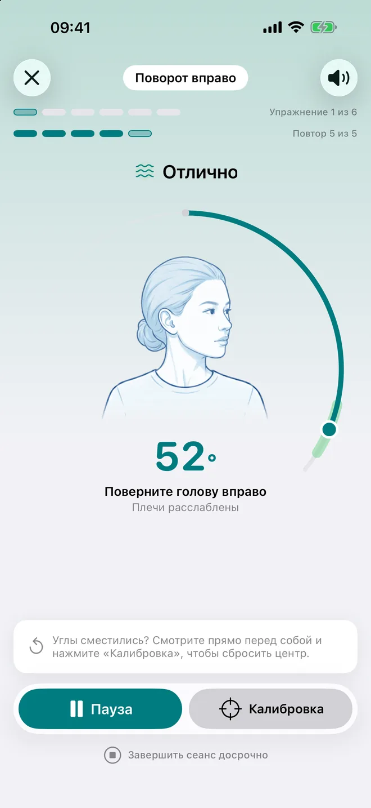
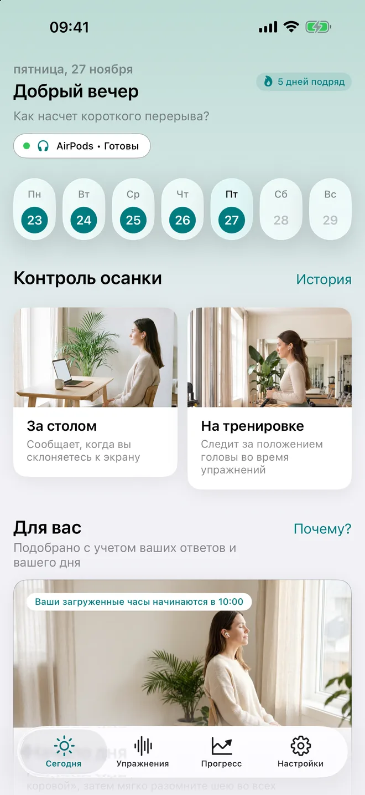
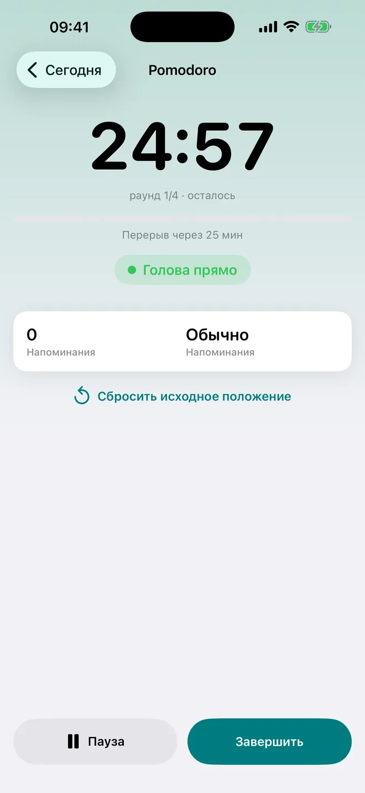

Шея
Повороты, наклоны в стороны, взгляд вниз и вверх, втягивание подбородка. AirPods измеряют угол и считают повторы; без них Nodly задает темп по таймеру.
Короткие упражнения для шеи, дыхания, глаз, рук и ног, а также йога за столом. С AirPods Nodly измеряет движения шеи, следит за осанкой и сообщает, если голова слишком долго опущена.
Загрузить в App StoreДля iPhone и iPad · С совместимыми AirPods или без них

Не только шея
Повороты, наклоны в стороны, взгляд вниз и вверх, втягивание подбородка. AirPods измеряют угол и считают повторы; без них Nodly задает темп по таймеру.

Долгий выдох, квадратное и ровное дыхание — по 1, 2 или 3 минуты, в темпе рисунка и легкой вибрации.

Двухминутный перерыв от экрана: посмотрите вдаль, медленно моргните, затем отдохните с закрытыми глазами.

Растяжка запястий, вращения запястьями и сжимание кулака — для дней за клавиатурой и мышью.

Подъемы на носки, подъемы носков, разгибание колена и шаги сидя — не вставая со стула.

Кошка-корова, боковой наклон и скручивание сидя, а также упражнения для плеч, чтобы размяться между встречами.
AirPods нужны только для отслеживания шеи. Все остальное работает без них.
Измеряется с AirPods
Датчики движения в наушниках следят за углом наклона головы. Когда вы достигаете целевого диапазона, Nodly сообщает об этом звуком и вибрацией и засчитывает повтор. Цели подстраиваются под вашу амплитуду движений.
Nodly использует датчики движения в наушниках. Без камеры и дополнительных устройств.
Смотрите прямо перед собой и не двигайтесь несколько секунд. Nodly примет это положение за 0°.
Когда вы достигаете целевого диапазона, Nodly сообщает об этом звуком и вибрацией и засчитывает повтор.
0°
Вправо
Перетащите вправо до зеленого диапазона, затем вернитесь в центр.
Повторы: 0


Контроль осанки
Следит за положением головы во время работы — от 30 минут до 2 часов или раундами Pomodoro: 25 минут работы и 5 минут отдыха.
Если во время упражнений стоя голова опускается, Nodly сообщит об этом за несколько секунд. Для упражнений лежа просто поставьте паузу.
Заблокируйте телефон и продолжайте работать. Оставшееся время видно на экране блокировки — оттуда же можно поставить паузу или завершить сеанс.
С помощью Siri, из Пункта управления или автоматизацией режима фокусирования в приложении «Быстрые команды».
«Начать контроль осанки в Nodly»
Комплексы
Начните с готового комплекса, например «Начало дня» или «Перерыв от экрана», или выберите упражнения из библиотеки и расставьте их в своем порядке. Раздел «Для вас» на экране «Сегодня» предложит комплекс под ваш день и самые загруженные часы.
Прогресс
Ваша серия, ваша неделя и то, как время распределяется между шеей, дыханием, глазами, руками и ногами, — с первого взгляда. А пока вы занимаетесь, маленький 3D-стол постепенно наводит у себя порядок.
Подробности
История и комплексы синхронизируются между iPhone и iPad через ваш собственный iCloud.
Упражнения для шеи можно выполнять по таймеру. Остальным упражнениям AirPods не нужны никогда.
Ежедневное напоминание, перерывы в загруженные часы и итоги недели — каждое по желанию.
Голосовые подсказки, звуки и вибрация ведут вас, так что можно не смотреть на экран.
Динамический шрифт, VoiceOver и «Уменьшение движения» на iPhone и iPad.
Русский, английский, турецкий, немецкий, испанский, французский, итальянский, португальский, нидерландский, японский, корейский и китайский (упрощенный и традиционный).
Конфиденциальность и доверие
Данные о движении обрабатываются на телефоне, а непрерывная запись движений никогда не сохраняется. Аккаунт не нужен.
Движения должны быть медленными и комфортными. Если что-то не так, сразу остановитесь. Nodly никогда не торопит.
Nodly — приложение для хорошего самочувствия; оно не диагностирует и не лечит никакие заболевания. Если у вас есть проблемы с шеей, перед началом проконсультируйтесь с медицинским специалистом.
Правовая информация
Аккаунт не нужен, а данные о движении остаются на устройстве. Анонимную статистику использования мы собираем, только если вы это разрешите. Без рекламы, без отслеживания, без продажи данных.
Читать полностьюNodly предлагается по ежемесячной или ежегодной подписке; пользователи, имеющие на это право, получают 7-дневный бесплатный пробный период. Отменить подписку можно в любой момент в настройках аккаунта App Store.
Читать полностьюДвигайтесь медленно и только в комфортных пределах. Если почувствуете боль, головокружение или онемение, сразу остановитесь.
Читать полностью